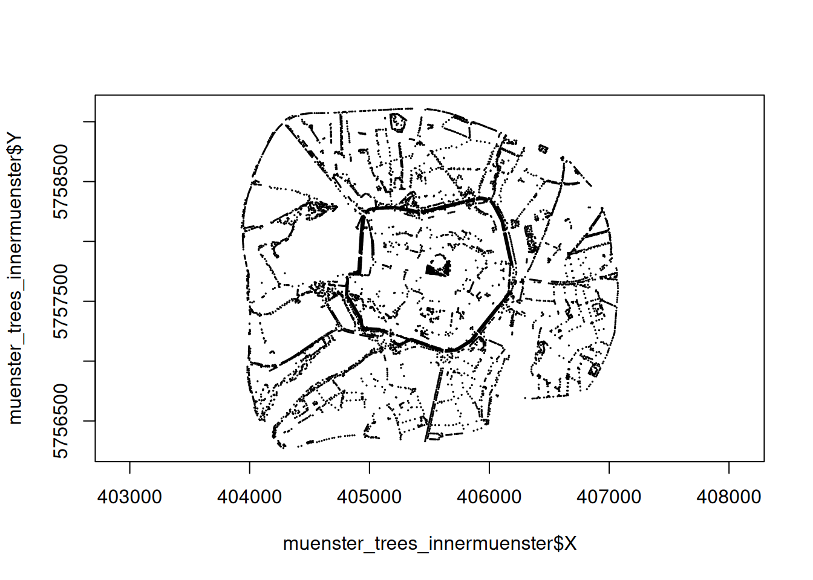

# zur besseren unterscheidung: "bezirke" ist der data.frame, "district" ist der spaltenname
bezirke = read.csv("../data/muenster_districts.csv")
trees = read.csv("../data/muenster_trees.csv")E03: Mehr Dataframes
Im Learnweb finden sich die Dateien muenster_districts.csv und muenster_trees.csv. Sie beinhalten Informationen zu den Stadtbezirken und Bäumen in Münster.
- Lade beide Dateien in R.
- Verschaffe dir einen Überblick über die beiden data.frames mit den Funktionen
head(),str().
head(bezirke) id district district_group area
1 15 Bahnhof Innenstadtring 363089.2
2 16 Albachten Münster-West 12965147.7
3 17 Angelmodde Münster-Südost 5016879.5
4 18 Kreuz Innenstadtring 1014690.9
5 19 Berg Fidel Münster-Hiltrup 4781065.8
6 20 Düesberg Mitte-Süd 2185161.9head(trees) species district X Y
1 Tilia Uppenberg 404685.2 5759126
2 Tilia Uppenberg 404698.5 5759130
3 Carpinus Uppenberg 404693.0 5759279
4 Carpinus Uppenberg 404692.9 5759289
5 Carpinus Uppenberg 404692.1 5759319
6 Tilia Uppenberg 404685.6 5759520str(bezirke)'data.frame': 45 obs. of 4 variables:
$ id : int 15 16 17 18 19 20 21 22 23 24 ...
$ district : chr "Bahnhof" "Albachten" "Angelmodde" "Kreuz" ...
$ district_group: chr "Innenstadtring" "Münster-West" "Münster-Südost" "Innenstadtring" ...
$ area : num 363089 12965148 5016880 1014691 4781066 ...str(trees)'data.frame': 39532 obs. of 4 variables:
$ species : chr "Tilia" "Tilia" "Carpinus" "Carpinus" ...
$ district: chr "Uppenberg" "Uppenberg" "Uppenberg" "Uppenberg" ...
$ X : num 404685 404698 404693 404693 404692 ...
$ Y : num 5759126 5759130 5759279 5759289 5759319 ...- Um Informationen über einzelne Spalten zu erhalten sind die Funktionen
table()undunique()sehr nützlich. Teste die Funktionen mit derdistrict_groupSpalte.
table(bezirke$district_group)
Altstadt Innenstadtring Mitte-Nordost Mitte-Süd Münster-Hiltrup
5 9 5 4 5
Münster-Nord Münster-Ost Münster-Südost Münster-West
4 3 4 6 unique(bezirke$district_group)[1] "Innenstadtring" "Münster-West" "Münster-Südost" "Münster-Hiltrup"
[5] "Mitte-Süd" "Mitte-Nordost" "Münster-Ost" "Altstadt"
[9] "Münster-Nord" Münsters Bezirke
- Welcher Bezirk Münsters ist am größten?
bezirke$district[which.max(bezirke$area)][1] "Amelsbüren"# oder:
bezirke[bezirke$area == max(bezirke$area),]$district[1] "Amelsbüren"- Wie groß ist die Bezirksgruppe “Altstadt”?
sum(bezirke[bezirke$district_group == "Altstadt",]$area)[1] 1194248# oder:
sum(bezirke$area[which(bezirke$district_group == "Altstadt")])[1] 1194248- Zu welcher Bezirksgruppe gehört der Bezirk “Schloss”?
bezirke[which(bezirke$district=="Schloss"),]$district_group[1] "Innenstadtring"# oder
bezirke$district_group[which(bezirke$district=="Schloss")][1] "Innenstadtring"- Aus Welchen Bezirken besteht die Bezirksgruppe “Münster-West”?
mw = which(bezirke$district_group == "Münster-West")
bezirke[mw,]$district[1] "Albachten" "Gievenbeck" "Roxel" "Mecklenbeck" "Nienberge"
[6] "Sentrup" # oder
bezirke$district[bezirke$district_group == "Münster-West"][1] "Albachten" "Gievenbeck" "Roxel" "Mecklenbeck" "Nienberge"
[6] "Sentrup" Münsters Bäume
- Wie viele Baumarten gibt es in Münster?
v = trees$species
length(unique(v))[1] 67# oder
length(table(trees$species))[1] 67- Wie viele Buchen (species: Fagus) gibt es in Münster?
sum(trees$species == "Fagus")[1] 420# oder:
fagus = trees[trees$species == "Fagus",]
nrow(fagus)[1] 420length(fagus$species)[1] 420- In welchem Bezirk stehen die meisten Bäume?
v1 = sort(table(trees$district), decreasing = TRUE)[1]
v1 # Name mit BaumanzahlNienberge
2407 which.max(table(trees$district)) # Name mit IndexNienberge
34 - In welchem Bezirk stehen die meisten Magnolien (species: Magnolia)?
which.max(table(trees$district[trees$species == "Magnolia"]))Bahnhof
2 muenster_Magnolia <- trees[trees$species== "Magnolia",]
table(muenster_Magnolia$district)
Aaseestadt Bahnhof Dom Düesberg
1 25 1 8
Gremmendorf-West Herz-Jesu Hiltrup-Mitte Hiltrup-Ost
1 1 5 8
Kinderhaus-West Mauritz-Mitte Mecklenbeck Schlachthof
4 7 2 6
Schloss
7 Und noch was zum Knobeln:
- Erstelle eine Karte aller Bäume in den Bezirksgruppen “Altstadt” und “Innenstadtring”.
# Welche districts sind in den districtgruppen "Altstadt" und "Innnestadtring"?
innermuenster = bezirke$district[bezirke$district_group == "Altstadt"| bezirke$district_group == "Innenstadtring"]
innermuenster [1] "Bahnhof" "Kreuz" "Josef" "Pluggendorf" "Mauritz-West"
[6] "Aegidii" "Schloss" "Dom" "Martini" "Hansaplatz"
[11] "Buddenturm" "Neutor" "Überwasser" "Schlachthof" # diesen Vektor benutzen um die Bäume zu filter:
muenster_trees_innermuenster = trees[trees$district %in% innermuenster,]
# Dann X und Y plotten, asp = 1 verhindert verzerrung (aspect ratio), cex = 0.1 ist die Punktgrösse
plot(muenster_trees_innermuenster$X, muenster_trees_innermuenster$Y,
asp = 1, cex = 0.1)